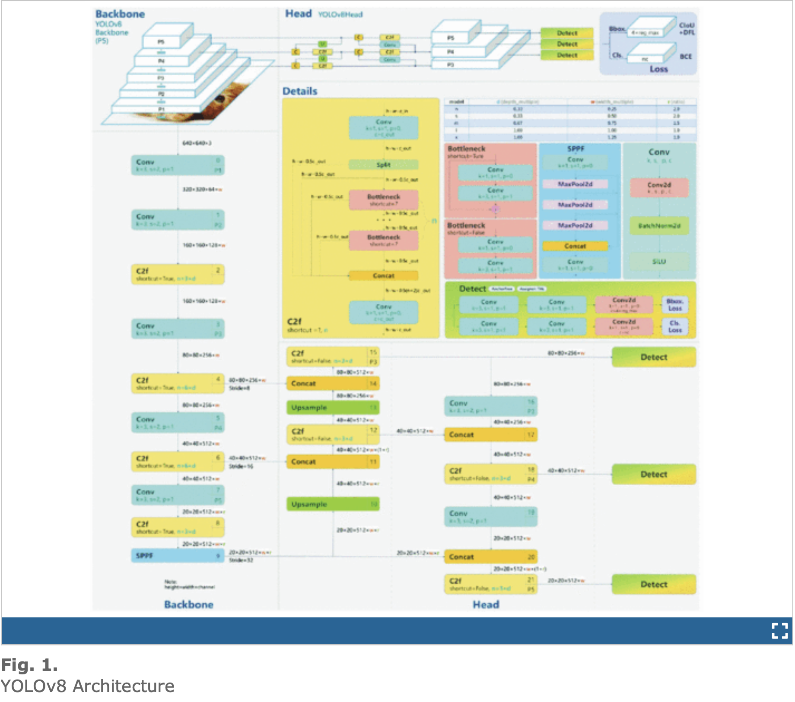
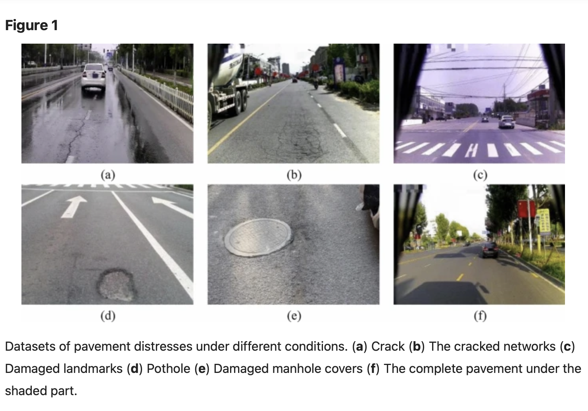

Road Hazard Detection Models: YOLOv8 and Beyond
In this section, we delve into the models used for detecting various road hazards, focusing on the architecture, training techniques, and preprocessing steps employed in YOLOv8, as well as comparisons with its predecessors, YOLOv5 and YOLOv7. These models are applied to detect not only potholes but also sewer covers and manholes, demonstrating their versatility in identifying different types of hazards on roads in real-time.
YOLOv8 Architecture
The architecture of YOLOv8 builds on innovations from YOLOv5 but introduces several improvements for superior detection accuracy and efficiency. These improvements allow YOLOv8 to excel in detecting multiple types of road hazards, including potholes, sewer covers, and manholes.
CSPDarknet53 Feature Extractor
YOLOv8 employs CSPDarknet53 as its feature extractor, which consists of convolutional layers, batch normalization, and SiLU activation functions. The shift from a 6x6 convolutional layer to a 3x3 convolutional layer improves the ability to detect finer details, such as the edges and textures of potholes, sewer covers, and manholes.
. C2f Module (Cross-Stage Partial Bottleneck)
The C2f Module helps YOLOv8 merge high-level features with contextual information, which is critical for distinguishing between different types of road hazards. By concatenating the outputs of bottleneck blocks, the model can more accurately represent the visual features of hazards like potholes, manholes, and sewer covers.
Detection Head
YOLOv8 adopts an anchor-free detection strategy, allowing the model to directly predict object centers and bounding boxes for multiple hazard types.
- Independent Branches: Separate branches for objectness, classification, and regression tasks. This design allows the model to focus on detecting different road hazards with high accuracy.
- Activation Functions: YOLOv8 uses a sigmoid function for objectness scores and softmax for class probabilities, ensuring the correct classification of hazards like potholes, sewer covers, and manholes.
-
Loss Functions
YOLOv8 uses CIoU (Complete Intersection over Union) and DFL (Dynamic Focal Loss) for bounding box regression, and Binary Cross-Entropy for classification. These loss functions help the model more effectively detect small and irregular objects such as potholes and sewer covers, which may be harder to detect due to varying sizes and conditions.
-
YOLOv8-Seg Model
In addition to object detection, YOLOv8 includes a segmentation model, YOLOv8-Seg, which predicts semantic segmentation masks. This adds versatility, allowing the model to not only detect hazards but also to segment and classify them with higher precision.
Advanced Training Techniques
YOLOv8 enhances its performance using Mosaic Augmentation, a technique that combines four images during training. This helps the model learn to detect road hazards like potholes, sewer covers, and manholes in various locations and backgrounds. Mosaic augmentation is disabled in the last 10 epochs to avoid potential performance degradation. Additionally, hyperparameter tuning was performed for models such as YOLOv5 tiny, YOLOv5 small, YOLOv7, YOLOv8 tiny, and YOLOv8 small to ensure comparable results across all models. Training was conducted on an NVIDIA GeForce RTX 3090 GPU, ensuring efficient computation and faster model training.
Dataset for Road Hazard Detection
The dataset used in this project was sourced from Roboflow Universe, specifically the "Pothole Detection" dataset provided by the Intel Unnati Training Program. This dataset includes annotated images of potholes, manholes, and sewer covers, offering a diverse range of road hazards captured under different lighting conditions, camera angles, and environmental settings.
Additionally, the dataset incorporates images from the Indian Driving Dataset, which includes road hazards captured from dashboard camera perspectives. The inclusion of water-filled potholes further enhances the dataset’s diversity, ensuring that the model is robust against a variety of real-world conditions.
Data Preprocessing
In preparation for model training, several preprocessing steps were applied to the dataset to ensure consistency and enhance the model’s ability to generalize.
Min-Max Normalization
All images were normalized using min-max normalization, which standardizes pixel values across the dataset. Given that all input images were 640×640 pixels in size, no resizing was required.
Data Augmentation
To increase the diversity and size of the dataset, various data augmentation techniques were applied:
- Image Flipping: Horizontal flipping of images to account for different orientations of road hazards.
- Image Scaling: Rescaling to ensure the model can detect potholes and manholes of different sizes.
- Motion Blurring: Blurring was introduced to simulate low-quality or motion-affected images.
- Color Manipulation: Adjustments to RGB values to simulate varying lighting conditions, such as bright sunlight or low ambient light at night.
- Fog Addition: The introduction of fog in some images ensured that the model could handle low-visibility conditions.
Model Training
Hyperparameter tuning was conducted by considering dif-ferent parameters and evaluating which ones yielded the best results. All three models, namely, YOLOv5 tiny, YOLOv5 small, YOLOv7, YOLOv8 tiny, and YOLOv8 small, were trained with the same hyperparameters, to ensure comparable results. Training of all models was performed on an NVIDIA GeForce RTX 3090 GPU with 10,496 CUDA cores.